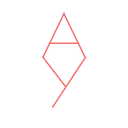
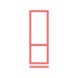
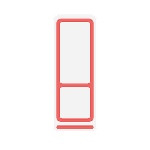
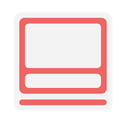
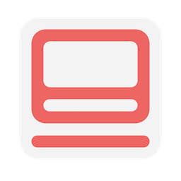

From monogram to favicon
When I was a kid I developed a rudimentary monogram for my visual work, which was a “A” stacked on top of a “Y” such that the “legs” of the A met the “arms” of the Y. This was concise but the proportions of the letters were always off in some way.  In 2020 I decided to stylize the monogram further, this time removing the “stem” of the Y and turning it horizontally to simulate the curvature of a lowercase “y.” The upper portion of the monogram was squared and leveled off, taking inspiration from the Chinese character for the sun, 日 (rì). The resulting monogram was pleasing to the eye and easy to fit in the corner of most of my sketches without being obtrusive.  Around 2021 I started posting to a now-defunct art account on Instagram using a Google Slides-created digital watermark, shown below. I made sure that the borders and lines were of equal width.  It has been a few years since I’ve been actively sketching in any major way. However, I’d never let this logo go to waste, and I decided to revisit it to design a custom favicon for this site. I blew up the proportions to a square, thickened the lines somewhat, and patted myself on the back.  Of course this logo seems decent at such a large scale, but when squeezed into a favicon in your tab it becomes rather hard to read. I decided to optimize it further to display at 128x128 or lower resolution. I don’t know how to properly tune radial curves and translate smooth objects to the pixel scale, but this one looks decent for now.  I really need to learn how to use real graphics software.